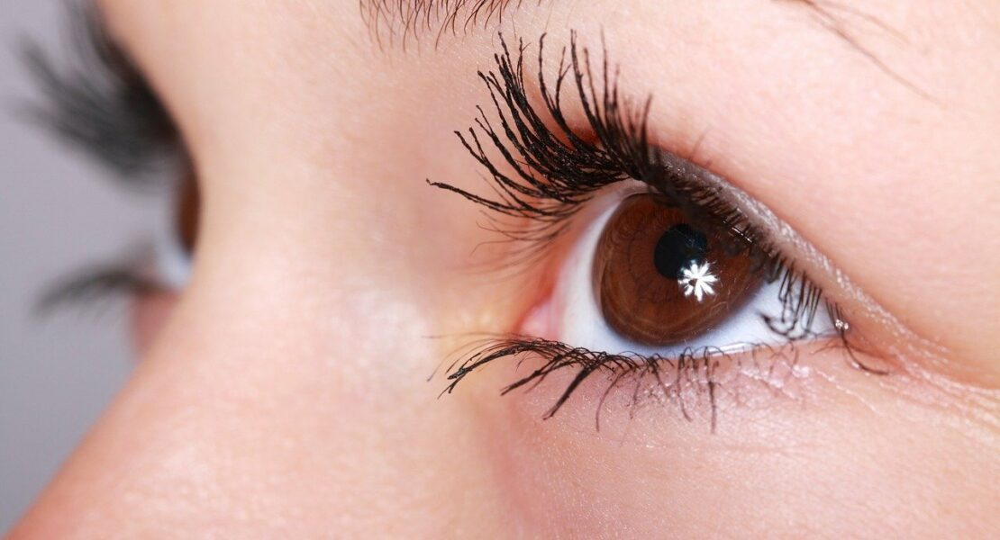

Fungsi mata sangatlah penting bagi manusia. Oleh karena itu, kesehatannya harus selalu dijaga. Nah, ada beberapa cara menjaga kesehatan mata yang dapat Anda lakukan. Dengan mata yang sehat, Anda pun dapat melihat dengan jelas dan melakukan rutinitas sehari-hari dengan lebih nyaman.
Setiap aktivitas yang dilakukan sehari-hari, tidak terlepas dari peran mata sebagai indra penglihatan. Meski fungsinya bisa menurun seiring pertambahan usia, tetapi Anda tetap bisa melakukan berbagai upaya untuk menjaga kesehatan mata dan mencegahnya dari berbagai penyakit mata.
Mengingat pentingnya fungsi mata, ada beberapa hal yang bisa Anda lakukan untuk menjaga kesehatan mata, antara lain:
Setiap orang, mulai dari anak-anak hingga lansia, dianjurkan untuk memeriksakan mata secara rutin setidaknya 2 tahun sekali. Orang dewasa yang sudah berusia lebih dari 40 tahun, bahkan disarankan untuk memeriksakan mata setahun sekali. Hal ini bertujuan untuk mencegah penyakit mata yang berkaitan dengan pertambahan usia, seperti degenerasi makula, glaukoma, dan katarak. Hal ini bertujuan untuk mencegah penyakit mata yang berkaitan dengan pertambahan usia, seperti degenerasi makula, glaukoma, dan katarak. Melalui pemeriksaan mata, dokter dapat memantau kondisi mata dan mendeteksi sejak dini masalah pada mata akibat penyakit tertentu, seperti diabetes dan tekanan darah tinggi. Selain itu, pemeriksaan mata juga penting dilakukan bila Anda memiliki riwayat penyakit mata yang diturunkan secara genetik dari orang tua ke anak. Dengan demikian, langkah penanganan dapat dilakukan dengan cepat dan tepat.
Untuk menjaga kesehatan mata, Anda disarankan untuk mengonsumsi makanan bernutrisi yang kaya akan kandungan vitamin A, vitamin C, vitamin E, lutein, selenium, dan asam lemak omega-3. Beberapa nutrisi di atas diketahui dapat menangkal masalah mata terkait usia, misalnya katarak dan degenerasi makula. Anda dapat memperoleh berbagai nutrisi tersebut dengan mengonsumsi sayuran hijau, salmon, tuna, telur, kacang-kacangan, dan jeruk.
Menatap layar komputer atau smartphone terlalu lama dapat menyebabkan mata lelah. Gejalanya bisa berupa sakit kepala, nyeri leher, sakit pada bahu dan punggung, mata kering, serta pandangan menjadi kabur. Jika Anda bekerja di depan komputer sepanjang hari, istirahatkan mata dengan mengalihkan pandangan selama 20 detik, setiap 20 menit sekali. Anda juga bisa mengistirahatkan mata selama 15 menit setiap 2 jam sekali. Bila mata terasa kering, Anda bisa sering mengedipkan mata atau menggunakan obat tetes mata.
Ditinjau oleh: dr. Sienny Agustin